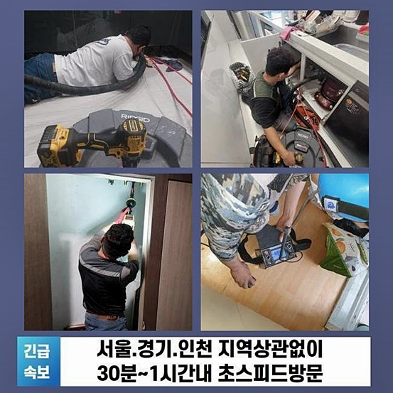
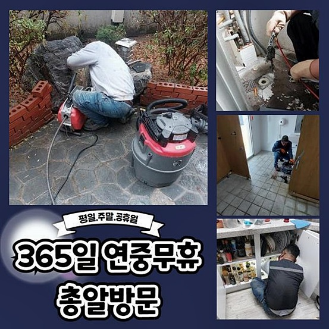
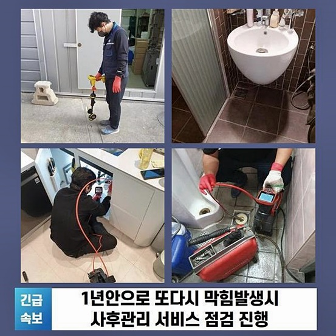
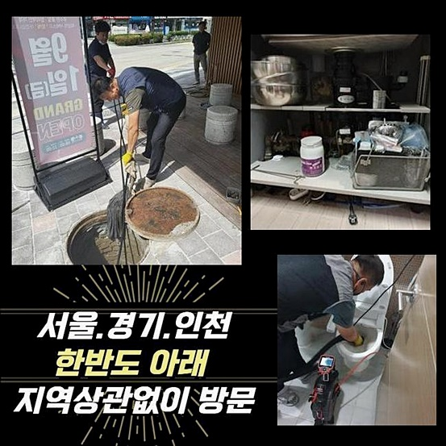
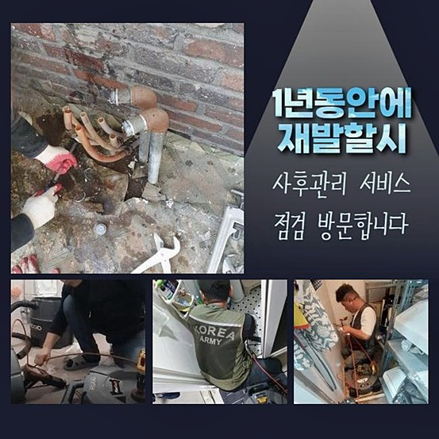
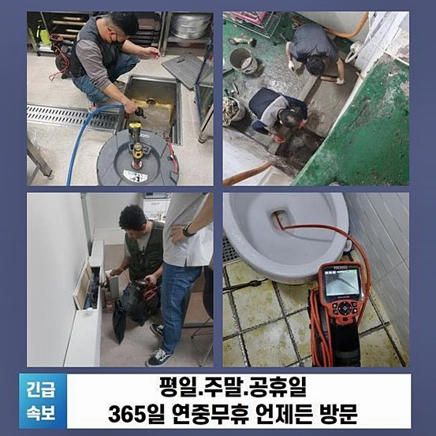
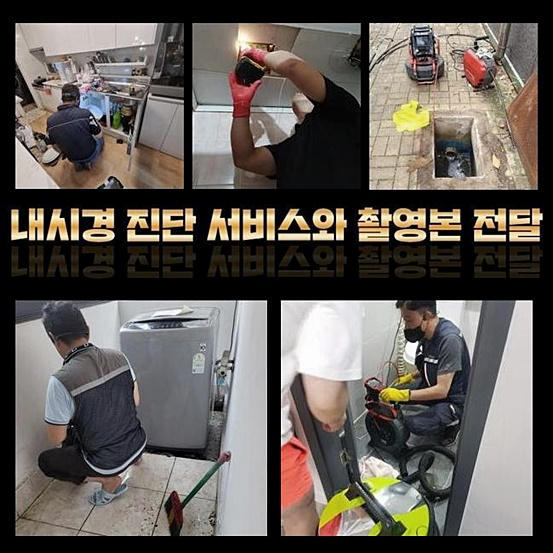

🏠 계양구 동양동하수도막힘 목상동 배관뚫기 부속수리
용인시 처인구 배관막힘 전문 시공 후기

📋 작업 개요
- 위치: 용인시 처인구, 수원시 영통구, 화성시 동탄
- 서비스 유형: 배관막힘, 고압세척, 내시경점검
- 작업 일시:
- 업체명: 하수구수사대 (010-5615-2118)
🔍 문제 상황
계양구 동양동하수도막힘 목상동 배관뚫기 부속수리
우리는 집에 머물며 식물에 물주고 샤워하는 등 다양한 목적으로 물이 사라지면 난감할만큼 수돗물을 막대하게 소비합니다
오염된 하수를 처리장으로 내려보내는 중에 특정한 배수구의 고장으로 배출구 근방에서 오히려 역행이 일어나거나 범람한 하수구물이 차는 안타까운 문제가 도래하여 일상의 장애를 입죠
하수 막힘이 나타나면 당장에 개인 위생 정비도 한계가 있고 역류해 버린 오염수에서 피어오르는 구린내로 인상찌푸릴 일이 많아집니다
겉부분의 단순 막힘이면 배관용 클리닝 아이템이나 막대기를 써서라도 스스로 막힘 문제를 나아가실 수 있을 겁니다
고장이 난 배관의 일부가 도저히 감이 안잡히거나 손을 뻗어도 안되는 매우 아래 파트라면 계획과 지식이 없는 조치로는 한계가 보이므로 업체의 장비력과 기술을 요청하는 쪽이 바람직하다 말씀드립니다
오늘 보여드릴 내용은 가장 보편적인 주거시설 배수구가 마비되는 사고를 다룰 때 무슨 기계를 활용하고 구동이 전혀 안되는 배수로를 다루고 있는지에 관해 이야기해 보겠습니다
배수구문제는 보통 모발과 흙같은 오염원으로 인하여 촉발될 때가 많아요
이번에 인연을 맺은 장소를 진단해 봤더니 건물의 한 세대만 배수 시스템에 장애가 생긴 쉬운 건수는 아니었습니다
온 빌라 곳곳에서 샤워기를 틀게 되면 역류하는 헤프닝이 벌어져서 주변에 계신 다수의 주민에게 난감함을 주고 있는 상황으로 판별됐어요

🔎 원인 분석
💡 전문가 진단: 정밀 진단 장비를 사용하여 슬러지의 고착 여부를 판명하고 타격/세척 작업을 실시했습니다.
물이 내려가지 않으면 치솟은 물에서 나는 독한 냄새가 온통 진동하며 확산되어 불쾌감을 조성하게 되는데다 물의 정상적인 이용에도 방해를 받게 됩니다
건물 전체의 배수에서 막힘이 생긴 현장의 특성상 일부 세대 배관이 아니고 옥외의 배수로부터 접한 측면에 대한 검토가 중요한 부분이라고 판별됐어요
우선 중앙 시스템과 연계된 유체 이동 경로를 명확하게 지적하는 게 필요해서 관로를 보는 탐지장비를 가동해 보았습니다
주파수를 사용하여 배수관에서 일정한 반응이 나타나면 신호음을 보내기에 배수로의 양상을 탐색하는 때에 최적으로 기능하는 장비입니다
배관이 조성된 경로를 탐색해 주고 본격적으로 뚫으려고 하수구 망을 탈거했어요
파이프의 중단이 생긴건지 확신을 가져야 했으므로 관찰용 장비인 배관내시경을 들여보낸 상태입니다
내면 곳곳을 보니 가지배관들과 이어진 굵은 배수관 내면에서 슬러지가 상당량 튀어나왔는데요!
잘 관리하더라도 찾아오는 슬러지는 기름 잔량이 한군데에 정체하다가 응집하여 덩어리화되는 대상입니다
식사를 마치고 나서 식사를 준비하거나 그릇을 씻으면서 끈적한 기름분량을 배수구로 배출하면 경로를 따라 내려가지 않고 벽체에 덕지덕지 붙어요
다소 단순해보이는 사유로 한 가구만의 일이 아니라 다른 거주자도 빠짐 없이 고통을 앓게 되는 물의 이동경로가 봉인되고 고스란히 머무르는 사태가 표면화된 것이었답니다

🔧 작업 과정
통행장애가 틀림 없으므로 이물질로 붐비는 쪽을 뚫어버리는 단계에 돌입해야 합니다
끈적한 슬러지들을 소거해 줘야 할 때 플렉스샤프트라는 장치를 애용하고 있답니다
샤프트의 파워로 배관 내벽에 결착된 슬러지 부분을 무르게 만들고 바깥으로 빼는 장치로 배관내부를 속속들이 변화시켜서 문제를 없애주곤 한답니다
샤프트의 작동방식을 모르고 마구잡이로 대하면 멀쩡한 설비에도 상처가 생성되기 때문에 프로페셔널한 업체의 손길로 작업에 돌입하게 되는데요
몸집이 불어난 찌꺼기를 작은 조각으로 나누어주니 썩은 냄새를 유발하던 기름때 등의 찌꺼기가 배수 시설로 하향하면서 스피드있게 내려가는 걸 마주하게 될 수 있었어요
공공 배관을 세척했으니 세부적인 배관들을 개선할 차례가 다가왔네요
배관들이 수렴되는 하수구에 손상이 갔던 만큼 실내의 화장실 배관도 막혀있는 게 당연하니 전체 호실의 내측에서 철저한 정돈 단계가 필연적인 단계였죠
메인관로에 나타난 봉인을 해제해 줘도 잔가지들도 봉쇄된 시점이라면 각 욕실의 막힘이 자동으로 뚫리지 못할 수 있으므로 당연히 작업이 들어가야 했죠
이 제거업무는 건물의 컨디션에 따라서 적합하게 계획대로 진행돼요
가지 배관들의 청소를 완료한 다음에는 집수정에서 아까와는 확연히 다른 양의 슬러지들이 속속들이 집결되는 것을 감지하게 됐어요
또한 집수관에서 각 가정과 맞닿아 있는 관로를 철저히 역추적을 하면서 다시 체크해 주었어요
작업을 시행해주기 과거와는 뚜렷이 구분되게 쾌청하고 맑아진 현황을 파악하게 됐어요
속에 머무른 찌꺼기들을 송두리째 청소한 관로를 통해 물이 유동하는 상태임을 받아들이게 됐어요
모든 송수관의 청결 확보를 완료했으니 배수시스템에서 액상이 더는 위로 내뿜어져 나오거나 불투과로 인해 정체를 빚는 사안이 나타나진 않을 겁니다
모든 수도관의 정비를 본래의 편안함을 회복한 수도 시스템을 통해 거침없이 수돗물을 쓰실 수 있을 겁니다
배관 속에는 덩어리를 세분화 해준 액체화된 기름기는 유출된 것이고 유분의 막과 덩어리는 수면에 고여있으니 건져내면 일이 끝나죠


✅ 작업 완료
내부로 흘러들어간 기름이 슬러지화가 진행되어 몸집을 불려나가서 통로를 막은 사안이었기에 많은 세대에서 동시에 수돗물을 배출시키니 역류할 수 밖에 없었던 걸로 판단 된 것입니다
배관 케어를 종료하고 하수구로 물이 시원스레 내려가는지 통수 확인을 해보았는데 출중한 배수능력을 회복한 것을 체크하고 이번 업무를 결론 짓게 됐네요
화장실의 하수구 오류 유발 인자를 추측해보면 많은 경우의 수가 있으니 제대로 알아보려면 전문공의 기술력과 지식으로 막힘 근원부를 추적하여 뚫는 장치를 접목하여 모두 관통시켜야 합니다
불현듯 막힌 증상으로 인해 전전긍긍하지 마시고 시스템상의 오류가 있을 때 의뢰를 바로 맡겨주시면 빨리 배관의 곤란을 정상화를 시켜드릴 수 있게 최선의 방법을 찾겠습니다
하자없는 시공이 일어나게 만들테니 근심하시는 것은 뒤로하고 맡겨주시면 감사하겠습니다




⚠️ 하수구 배관 막힘 예방 및 관리 가이드
- ✅ 머리카락, 비닐, 물티슈 등 물에 분해되지 않는 이물질은 절대 흘려보내지 마세요.
- ✅ 기름기 많은 식기는 설거지 전 키친타올로 먼저 기름때를 닦아내세요.
- ✅ 주기적으로 배수구에 뜨거운 물을 가득 부어주어 유지방 고착을 방지하세요.
- ✅ 작업 후 1년 이내 재발 시 무상 A/S 보증 서비스를 제공합니다.
💡 핵심 정리
- 확실한 장비 작업(내시경 점검 및 샤프트 스케일링)으로 원인을 뿌리 뽑습니다.
- 작업 후 1년 이내에 동일한 부위 재발 시 100% 무상 A/S 서비스를 보장합니다.
- 서울 · 경기 · 인천 전 지역에 24시간 언제든 긴급 출동할 수 있도록 항시 대기 중입니다.
❓ 자주 묻는 질문 (FAQ)
🚨 용인시 처인구 배관막힘 문제로 고민이신가요?
정확한 원인 진단과 확실한 시공으로 재발 없는 해결을 약속드립니다.
24시간 긴급 출동 | 서울 · 경기 · 인천 전지역 | 1년 내 재발 시 무상 A/S